NAVIGATION
TOP of Page
HOME Page
KNAPSACK
General Information
Constructions
Getting There
Knapsack Park
The Viaduct
The Quarry
Mitchells Pass
|
This article describes a walk along the Lapstone Zig Zag railway formation to view John
Whitton's Sandstone Masterpiece, the Knapsack Viaduct, plus a road journey along Mitchells
Pass to cross Lennox Bridge.
John Whitton was born in 1819 at Foulby, Yorkshire, England. In 1856 he married Elizabeth
Fowler, sister of Sir John Fowler, consulting engineer to the NSW Government. Preceding
retirement he departed work for a years leave on 31 May 1890, and died aged 80 in 1898
at Mittagong, NSW. During 1846-48 he worked on rail and canal projects under railway
engineer John Hawkshaw. In 1848 he was Engineer, under Fowler, of the Manchester, Sheffield
and Lincoln Railway. He was Resident Engineer from 1852-56 for the Oxford, Worcester and
Wolverhampton Railway after Brunel departed for the Great Western Railway. In 1854 he was
elected a member of the Institution of Civil Engineers.
He was appointed Engineer-in-Chief of the NSW Government Railways in December 1856. He
originally advocated 5'3" gauge as an Australian standard, but changed in 1853 to Standard
gauge due to cost comparisons. Other achievements were the conversion of locomotives from
wood to coal firing to protect clothing and prevent lineside fires, plus the introduction
of an effective accounting system. When he retired in 1889 he had overseen the growth of
NSW railways from 34km to 3538km. He is acknowledged as "The father of the NSW Railways".
Knapsack Park on the walking track over the Lapstone Zig Zag formation contains a memorial
obelisk with a plaque commemorating his work.
|
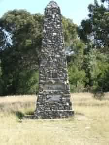
|
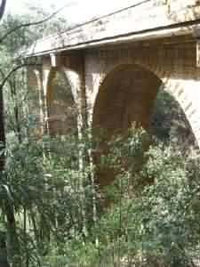
|
|
Whitton Memorial
|
Knapsack Viaduct
|
TOP
HOME
Whitton's Constructions
John Whitton is remembered for building the Blue Mountains Line and much of the Great
Southern Line, plus two Zig Zag formations; the Greater near Lithgow and the smaller at
Lapstone. The town of Whitton, NSW and the John Whitton Bridge in Meadowbank, NSW are
named after him. In the Blue Mountains, Whitton built many durable bridges and other
constructions from locally quarried sandstone to effect cost savings for the money strapped
government of the time. For example, the Stonequarry Bridge at Picton cost 1/10th of the
similarly sized steel bridge at Menangle.
The Greater Lithgow Zig Zag was opened in 1869 to descend 143 metres down the western
escarpment of the Blue Mountains into Lithgow valley. It was bypassed in 1920 by a series
of 10 tunnels. In 1990 the track bed became part of the 3'6" gauge ZigZag Railway
Preservation Society. The smaller Lapstone Zig Zag is found on the eastern escarpment
of the Blue Mountains near Lapstone, and contains the Knapsack Viaduct.
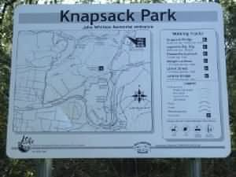 Information Display
TOP
HOME
Getting from Sydney to Knapsack Park
Knapsack Gully, a deep ravine containing Jamison Creek, was crossed by a sandstone
arched viaduct, 118 metres long, 38 metres high and 5.5m wide carrying a single track.
Work was begun in 1863 and completed in 1865. Due to the opening of the Glenbrook
Gorge Deviation through the Old Glenbrook Tunnel, the viaduct fell into disuse between
1892 and 1926 when it was then used as part of the Great Western Highway. Widening to
nine metres took place in 1939 to accomodate two lanes of road traffic. Road usage was
superseded in the mid 1990's by the opening of the freeway. The present rail line
through Glenbrook Gorge was opened in 1912.
Recommended for this walk would be a good pair of hiking boots and decent socks for the
stony walk along the upper unpaved track bed. Ensure you have adequate water plus film
and/or fresh batteries for your camera. This walk is a great invitation to photography.
Travel west along the Great Western Highway from Penrith. Do not take the freeway. Cross
the Nepean river on the Victoria bridge and continue through Emu Plains. Drive straight
through the Russell Street intersection (the turnoff to the freeway).
|
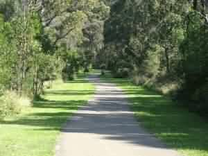
|
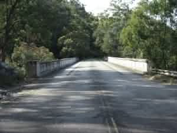
|
|
Original railway trackbed
|
Knapsack Viaduct top
|
TOP
HOME
From Knapsack Park to Knapsack Viaduct
Curve right going up the hill for one kilometre and cross the railway line. The highway
ends abruptly in the parking area with the turn around loop. Park in front of the park.
The one way street near the entrance is the exit of the scenic Mitchell's Pass road from
Blaxland - well worth a visit in itself. The freeway is also signposted for the Knapsack
Zig Zag on the Emu Plains exit at Russell Street. A footpath follows the old railway
trackbed to cross the viaduct and then proceed to the freeway.
The park contains a relatively flat area of a size that would indicate the previous presence
of a rail yard. In the centre stands the John Whitton Memorial Obelisk and further east
towards the present rail line is a derelict sandstone point keepers hut. The paved path
departing south from the car park is over the original track bed, with the widened cutting
due to the later use as a two lane highway. Less than thirty minutes of walking on a
reasonably flat path through bushland will see you at the viaduct. You will be amazed at
the sounds of the seemingly invisible bellbirds ringing from the nearest trees.
|
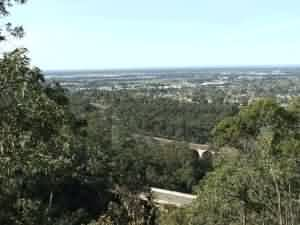
|
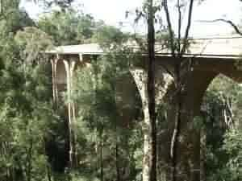
|
|
Cumberland Plains
|
Knapsack Viaduct
|
TOP
HOME
From Knapsack Viaduct to Knapsack Quarry
From the viaduct are two paths; one descends below the viaduct then climbs to Elizabeth
Lookout, the other from the western side of the viaduct immediately climbs steps up to
the old zig-zag railway formation at Top Points. From here take in spectacular views
across the Cumberland Plain.Walk the upper road to Knapsack street, or the middle road
down to Knapsack Quarry . From the highway, continue south to Skarratt Park South and
the Old Glenbrook Tunnel, or return back to Knapsack Viaduct on the paved path over the
original trackbed.
Cross the viaduct and take the uphill steps immediately at the end of the viaduct. Take
about ten steps to the small viewing platform for magnificent views of the viaduct and
the gorge. You can divert here to go under the bridge, down into the gorge and up the
opposite side to Elizabeth Lookout and Marghes Lookout. Continue on the steep climb for
about 15 minutes to near the top of the hill. Once there you are immediately at the
location of the buffer stops of the Top Points.
|
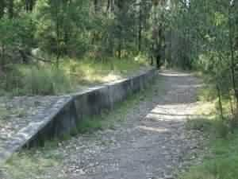
|
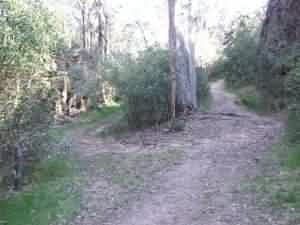
|
|
Lucasville Platform
|
Upper & Middle Roads
|
TOP
HOME
From Knapsack Quarry to the Exit at Knapsack Street
The views from here are the spectacular panorama of the Cumberland Plains. Follow
the dusty trackbed south from Top Points for 10 minutes and you will be at Lucasville
Platform. This was originally built in 1878 as a station to enable access to the
holiday house of Hon John Lucas, Minister for Mines. Stone steps ascend to the
location of the now burnt down house. The station closed in 1892. Immediately south
of the station the trackbed splits into the Upper and Middle roads. Take the Middle
road for a 20 minute walk through a narrow cutting to the flat area of the Quarry.
Either return to the Upper/Middle Road Points and head along the Upper Road, or
continue through the Quarry to get back onto the Upper Road. A 30 minute walk will
see you at the southern entrance to the track at Knapsack Street Glenbrook, near the
Glenbrook RAAF Base. Return straight along the Upper Track to Top Points, descend the
steps to the viaduct, turn left to cross the viaduct and head north to Knapsack Park.
|
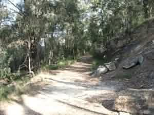
|
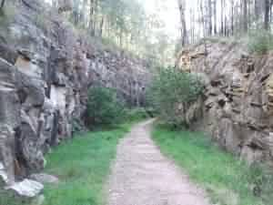
|
|
Top Points above the viaduct
|
Cutting into the Quarry
|
TOP
HOME
Mitchells Pass and Lennox Bridge
The overall walk took about three hours with time out for photography and a small
rest at the top of the steps.To avoid the stair climb from the viaduct to the Top
Points, make two smaller walks along the trackbed with the second beginning from
the Knapsack Street entrance.
In 1831 the Surveyor General, Major Thomas Mitchell proposed a road up the eastern
escarpment of the Blue Mountains. He employed David Lennox, a master stone mason
newly arrived from England in 1832, to constuct the stone single arch bridge to
cross a deep gully. It was completed in July 1833 as the first stone bridge on the
mainland, and remains the oldest surviving stone bridge on mainland Australia.
The bridge was built by a gang of hand picked convicts and used for over 100 years
as the main route across the mountains. After closure it was strengthened in the
1970's and reopened for light traffic in 1982. Access to the one way Mitchells pass
is from the lights at the Layton Street (MacDonalds corner) turn off from the Great
Western Highway at Blaxland.
|
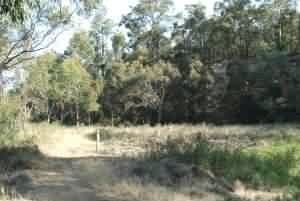
|
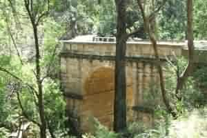
|
|
The Quarry
|
Lennox Bridge
|
TOP
HOME
|